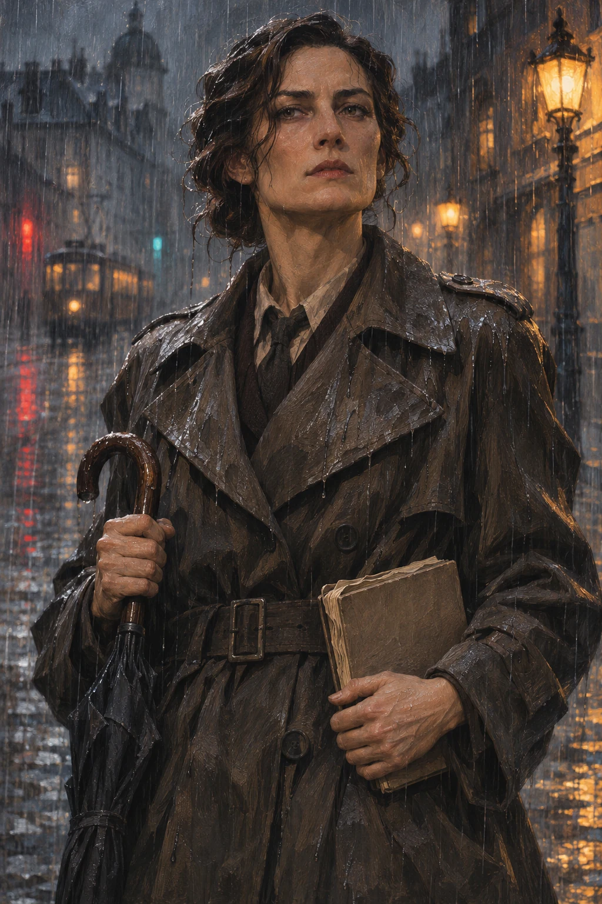
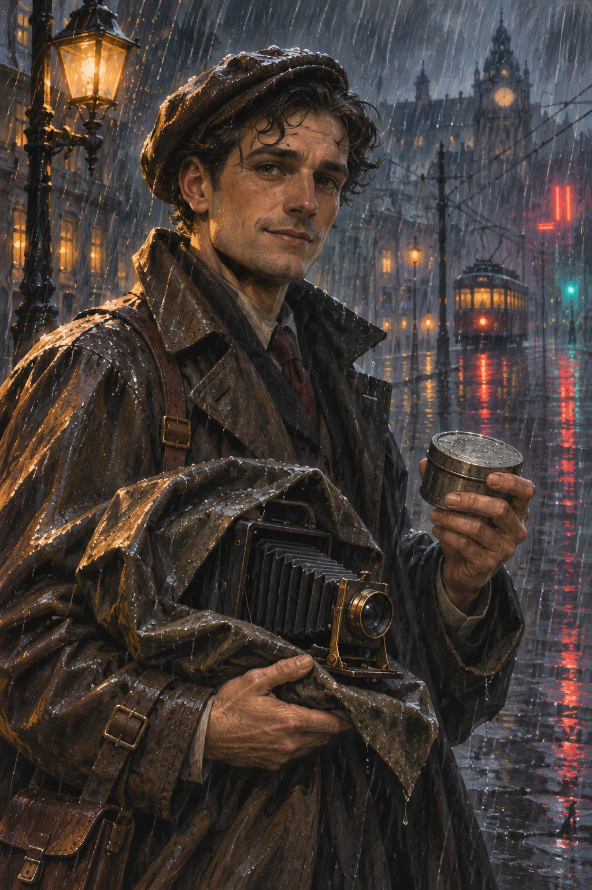
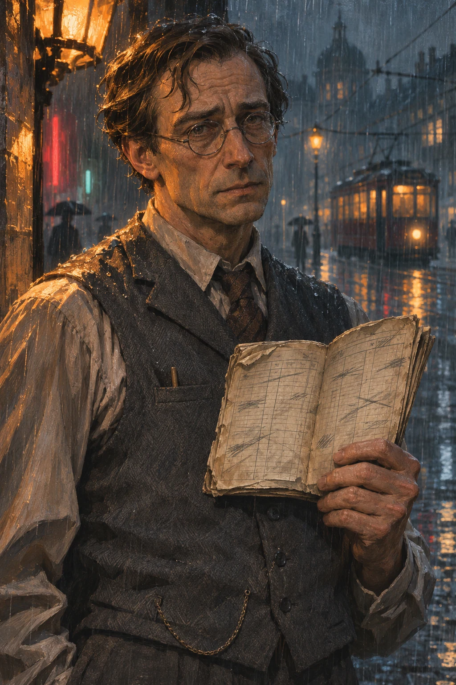
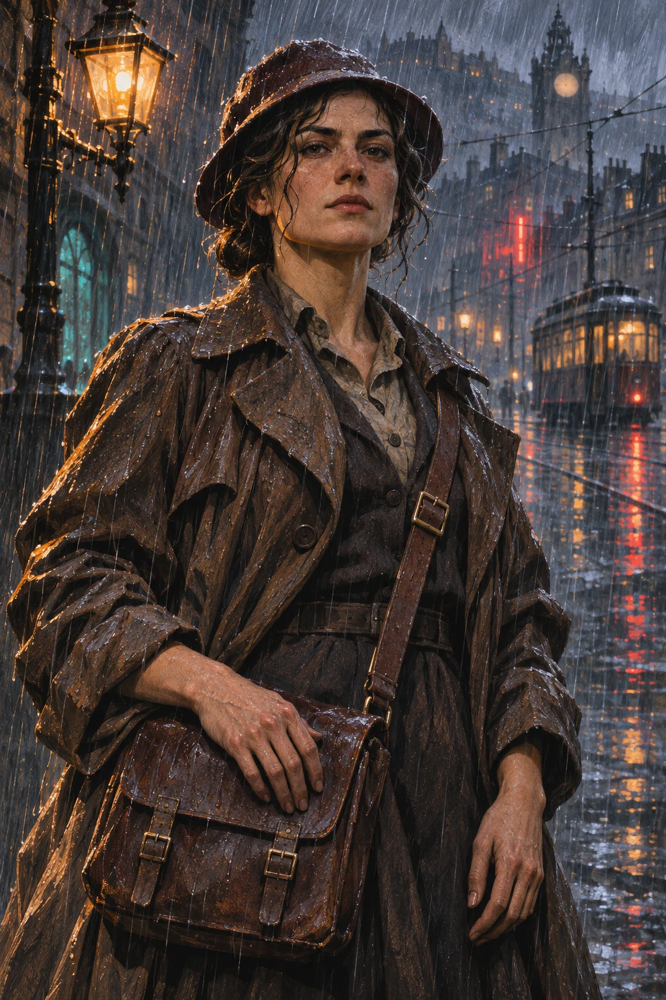

37 лет · силовой профиль · уровень 3
Ванда Гесс
Глава бюро розыска
Старый офицерский плащ, зонт-трость и блокнот с заказами, края которого волнисты от дождя.
Савелий Рун шесть лет назад привёл бюро первого клиента. Вы пришли на кладбище проститься и отдать долг.
Связь
Конрад снимает то, что вы не успеваете увидеть; вы говорите заказчикам «мы не знаем», когда Роман не уверен.
В центре внимания
Ведите разговор с тем, кто платит, и держите то, что нельзя отдать. Физическая выучка не даёт вам права решать за стол.
Личный вопрос
Какой заказ вы бросите, даже если за него заплатили вперёд?
Основное трио
Здоровье 31; защита 11; скорость 30 футов; одна атака за действие.
Сила 16 · Ловкость 12 · Телосложение 16 · Интеллект 10 · Мудрость 12 · Харизма 10
Оружие: Посох — условный профиль ближнего боя. Заклинания: Нет; сверхъестественные способности отключены.
Приёмы и проверки — по правилам приложения.
Образ героя свободно меняется вместе с ведущим. Числа соответствуют готовому листу уровня 3. Художественное устройство или талант не даёт дополнительных автоматических способностей.

32 лет · ловкий профиль · уровень 3
Конрад Вилк
Фотограф бюро и «Вечернего листка»
Складной фотоаппарат под клеёнкой, жестянка с мокрыми плёнками и привычка спрашивать разрешения перед снимком.
Вы снимаете похороны для газеты, и в видоискателе, в самом конце толпы, видите человека, которого сейчас закапывают.
Связь
Роман сверяет ваши снимки с расписаниями и бумагами; Ванда не просит вас снимать то, что нельзя показывать.
В центре внимания
Заметьте деталь, которую все пропустили, и уйдите тихо. Сравнение двух видимых деталей — ваш ход, но похожее ещё не значит то же самое.
Личный вопрос
Когда снимок становится уликой против того, кто на нём?
Основное трио
Здоровье 24; защита 13; скорость 30 футов; одна атака за действие.
Сила 10 · Ловкость 16 · Телосложение 14 · Интеллект 14 · Мудрость 12 · Харизма 12
Оружие: Посох — условный профиль ближнего боя. Заклинания: Нет; сверхъестественные способности отключены.
Приёмы и проверки — по правилам приложения.
Образ героя свободно меняется вместе с ведущим. Числа соответствуют готовому листу уровня 3. Художественное устройство или талант не даёт дополнительных автоматических способностей.

45 лет · аналитический профиль · уровень 3
Роман Иврен
Картотека и расписания бюро
Серый жилет, потрёпанная книжка расписаний всех линий с карандашными поправками, очки в простой оправе.
Десять лет вы работали с Савелием в Трамвайном парке № 2: он продавал билеты, вы сводили графики диспетчерской.
Связь
Ванда говорит заказчикам «мы не знаем», когда вы не уверены; Конрад приносит вам лица, а вы ему время.
В центре внимания
Сверьте две бумаги и назовите, где они спорят. Никакой магии анализа нет: только расписание, линейка и внимательность.
Личный вопрос
Что вы сделаете, если верная бумага погубит друга?
Основное трио
Здоровье 20; защита 12; скорость 30 футов; одна атака за действие.
Сила 8 · Ловкость 14 · Телосложение 14 · Интеллект 16 · Мудрость 12 · Харизма 12
Оружие: Посох — условный профиль ближнего боя. Заклинания: Нет; сверхъестественные способности отключены.
Приёмы и проверки — по правилам приложения.
Образ героя свободно меняется вместе с ведущим. Числа соответствуют готовому листу уровня 3. Художественное устройство или талант не даёт дополнительных автоматических способностей.

51 лет · социальный профиль · уровень 3
Регина Хольт
Голос бюро для горюющих
Тёмный шарф, сухой платок для чужих слёз и нотная тетрадь в клеёнчатой обложке.
Вы пели в кладбищенском хоре в день похорон и стоите в последнем ряду, где слышно, как дождь заливает псалом.
Связь
Вы доверяете Ванде вести разговор, а себе оставляете право остановить его; Ванда знает, что вы никогда не давите на свидетеля.
В центре внимания
Поговорите с тем, кто боится, и дайте ему уйти, если он хочет. Поддержка здесь разговорная, без сверхъестественного исцеления.
Личный вопрос
Где жалость к человеку становится помощью его лжи?
Место 4
Здоровье 24; защита 11; скорость 30 футов; одна атака за действие.
Сила 12 · Ловкость 12 · Телосложение 14 · Интеллект 10 · Мудрость 16 · Харизма 14
Оружие: Посох — условный профиль ближнего боя. Заклинания: Нет; сверхъестественные способности отключены.
Приёмы и проверки — по правилам приложения.
Образ героя свободно меняется вместе с ведущим. Числа соответствуют готовому листу уровня 3. Художественное устройство или талант не даёт дополнительных автоматических способностей.

29 лет · силовой профиль · уровень 3
Зоя Тарх
Посыльная бюро, бывшая кондукторша
Кондукторская сумка без компостера, ботинки на толстой подошве и руки, всегда оставленные на виду.
Вы много раз везли Савелия домой последним трамваем № 3, и вам трудно поверить, что он больше никуда не поедет.
Связь
Конрад зовёт вас, когда надо догнать; вы напоминаете ему смотреть не только в видоискатель, но и под ноги.
В центре внимания
Найдите путь короче и проверьте, кто идёт следом. Ваше место за столом свободно, а сюжет не требует вас лично.
Личный вопрос
Кого вы догоните, а кого отпустите?
Место 5
Здоровье 31; защита 11; скорость 30 футов; одна атака за действие.
Сила 16 · Ловкость 12 · Телосложение 16 · Интеллект 10 · Мудрость 12 · Харизма 10
Оружие: Посох — условный профиль ближнего боя. Заклинания: Нет; сверхъестественные способности отключены.
Приёмы и проверки — по правилам приложения.
Образ героя свободно меняется вместе с ведущим. Числа соответствуют готовому листу уровня 3. Художественное устройство или талант не даёт дополнительных автоматических способностей.

34 лет · аналитический профиль · уровень 3
Казимир Лотт
Переписчик нотариальной конторы по соседству
Чернила на манжете, лупа на шнурке и аккуратная бечёвка для папок.
Вы переписывали для бюро текст некролога и заметили странную лишнюю петлю в подписи вдовы под заметкой.
Связь
Роман проверяет ваши копии, а вы просите его объяснять выводы обычными словами.
В центре внимания
Сравните почерк, но не говорите больше, чем видно: сходство руки ещё не приговор. Это ремесло, а не колдовство.
Личный вопрос
Чью подпись вы не согласитесь заверить?
Место 6
Здоровье 20; защита 12; скорость 30 футов; одна атака за действие.
Сила 8 · Ловкость 14 · Телосложение 14 · Интеллект 16 · Мудрость 12 · Харизма 12
Оружие: Посох — условный профиль ближнего боя. Заклинания: Нет; сверхъестественные способности отключены.
Приёмы и проверки — по правилам приложения.
Образ героя свободно меняется вместе с ведущим. Числа соответствуют готовому листу уровня 3. Художественное устройство или талант не даёт дополнительных автоматических способностей.

27 лет · ловкий профиль · уровень 3
Яна Ренк
Курьерка бюро
Короткий плащ, непромокаемая сумка и жетон Трамвайного парка на запястье.
Вы привезли на похороны венок от парка и теперь стоите с пустой сумкой под чужим зонтом.
Связь
Ванда никогда не называла вашу работу «просто доставкой», и вы это запомнили.
В центре внимания
Отнесите слово туда, куда другие не успеют. Сопоставьте время и маршрут, а предположение подтвердите вещью или записью.
Личный вопрос
Когда чужая записка становится вашей ответственностью?
Место 7
Здоровье 24; защита 13; скорость 30 футов; одна атака за действие.
Сила 10 · Ловкость 16 · Телосложение 14 · Интеллект 14 · Мудрость 12 · Харизма 12
Оружие: Посох — условный профиль ближнего боя. Заклинания: Нет; сверхъестественные способности отключены.
Приёмы и проверки — по правилам приложения.
Образ героя свободно меняется вместе с ведущим. Числа соответствуют готовому листу уровня 3. Художественное устройство или талант не даёт дополнительных автоматических способностей.

46 лет · социальный профиль · уровень 3
Тимон Крой
Пишет некрологи для «Вечернего листка»
Плоская шляпа, мягкий голос и листки с некрологом в кармане, размякшие от дождя.
Вы написали некролог Савелия со слов вдовы: «Он всегда успевал на последний трамвай».
Связь
Конрад приносит вам лица, а вы ему слова; вы доверяете его молчаливым вопросам.
В центре внимания
Верните человеку имя, которое у него отняли. Класс обозначает поддержку и слово, а не чудо.
Личный вопрос
Что вы напишете, если человек из некролога жив?
Место 8
Здоровье 24; защита 11; скорость 30 футов; одна атака за действие.
Сила 12 · Ловкость 12 · Телосложение 14 · Интеллект 10 · Мудрость 16 · Харизма 14
Оружие: Посох — условный профиль ближнего боя. Заклинания: Нет; сверхъестественные способности отключены.
Приёмы и проверки — по правилам приложения.
Образ героя свободно меняется вместе с ведущим. Числа соответствуют готовому листу уровня 3. Художественное устройство или талант не даёт дополнительных автоматических способностей.